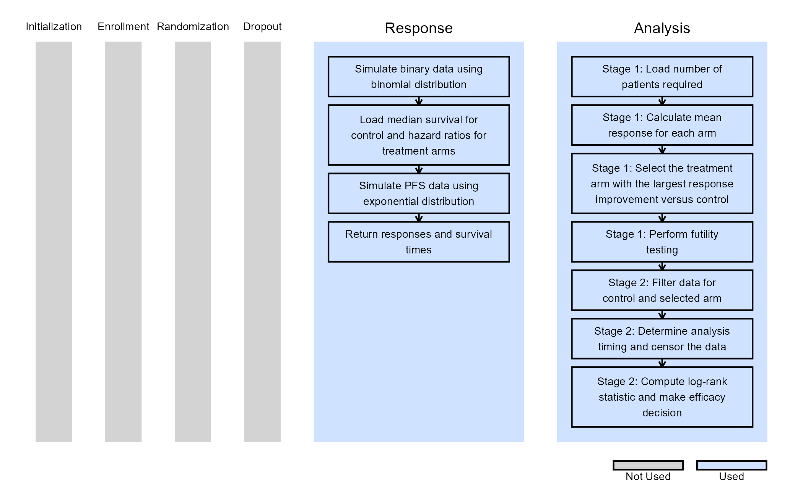

Multiple-Arm Two-Stage Design with Dual Endpoints for a Seamless Phase II/III Trial
Julija Saltane, J. Kyle Wathen
September 17, 2026
MultiArmTwoEndpointTwoStageTrial.RmdThis example is related to both the Integration Point: Response and the Integration Point: Analysis. Click the links for setup instructions, variable details, and additional information about the integration points.
- Study objective: Multiple Arm Confirmatory
- Number of endpoints: Single Endpoint
- Endpoint type: Binary Outcome
- Arms: Control + 2 Treatment arms
- Task: Explore
Note: This example is compatible only with Fixed Sample statistical design. The R code automatically detects whether interim look information (LookInfo) is available and stops the simulation.
Important note: This example uses East Horizon’s built-in single-endpoint framework because dual-endpoint functionality is not yet available. It also does not use the time-to-event endpoint configured in Project Settings, as R integration for this endpoint type is not yet supported.
Introduction
This example demonstrates how to compute probability of success for a multi-arm clinical trial with two endpoints. This is achieved by extending East Horizon’s single-endpoint framework to support dual endpoints through custom R scripts implemented at the Response (Patient Simulation) and Analysis integration points.
The example considers an inferentially seamless two-stage Phase II/III clinical trial design. The design includes a concurrent control arm in both phases and uses a short-term binary endpoint in Phase II to select the optimal dose for further evaluation. In Phase III, treatment efficacy is evaluated using a long-term time-to-event (TTE) endpoint, specifically Progression-Free Survival (PFS).
Seamless Phase II/III designs are increasingly used to integrate dose-selection and confirmatory objectives within a single study setup, potentially shortening drug development in areas with high unmet medical needs. This approach is particularly useful when the primary Phase III endpoint requires long follow-up periods to mature. In such settings, an earlier surrogate efficacy endpoint can be used during the Phase II to guide treatment/dose selection while continuing patient follow-up for the time-to-event endpoint used in the final confirmatory analysis.
Why R Integration is Required
To support both binary and time-to-event endpoints in a multi-arm trial setup, we require an ability of using dual endpoints - this is something that East Horizon cannot handle yet with its current response generation algorithms for multi-arm study objectives. Therefore, we must integrate a custom R file for the simulation to do so. In addition, the way that the endpoint data is analyzed to first select the treatment arm based on the binary dataset and then only use control data vs the selected treatment arm to run the efficacy analysis on PFS also requires a custom R code, as this type of analysis is not yet natively supported.
R Functions Used in the Example
Once CyneRgy is installed, you can load this example with the following command:
CyneRgy::RunExample( "MultiArmTwoEndpointTwoStageTrial" )Running the command opens Description.Rmd and all R
scripts in the active supported IDE.
RStudio Project File: MultiArmTwoEndpointTwoStageTrial.Rproj
In the R directory of this example you will find the following R files:
SimulateBinaryAndPFS.R - This function is responsible for generating the patient-level response data used in each simulated trial. It generates the short-term binary endpoint for all treatment and control arms and generates PFS outcomes for the same patients. The binary response is simulated using a binomial distribution based on the treatment-specific response probabilities specified in the East Horizon inputs. PFS data are generated using an exponential distribution, with the control-arm median survival and treatment-specific hazard ratios supplied through the
UserParaminput. The function returns both the binary responses and PFS survival times so that the two endpoints can subsequently be used by the analysis function. The current implementation assumes independence between the binary and PFS endpoints. This assumption can be modified in the R code if a correlation between short-term response and long-term PFS is required for a particular trial design.SelectArmAndAnalyzePFSTwoStages.R - This function implements the two-stage adaptive analysis. First, it identifies the patients available for the Phase II analysis and calculates the observed binary response rate for each treatment arm and the control arm. The treatment arm with the largest observed improvement over control is selected for further evaluation. A futility criterion is then applied to determine whether the selected treatment provides sufficient evidence to proceed. If the trial proceeds to Phase III, the function retains only the selected treatment arm and the concurrent control arm for the final efficacy analysis. It determines the appropriate analysis timing based on the target number of PFS events, applies censoring where necessary, and performs a log-rank test using the available PFS data. Importantly, PFS information collected during both phases is retained for the selected treatment and control arms and contributes to the final analysis.
Workflow Overview
The figure below illustrates where this example fits within the R integration points of East Horizon, accompanied by flowcharts outlining the general steps performed by the R code.

By combining the above R functions with the East Horizon native inputs, users are able to simulate and use aggregated data from each simulated trial to compute the expected probability of success of their trial design. Users will also continue to benefit from East Horizon’s output visualizations – with the caveat that the Probability of Success metric will be labeled as “Power” in the native outputs of East Horizon.
Statistical Assumptions
- Binary responses are generated using binomial distribution
- Time-to-event (PFS) data is generated using exponential distribution
- Binary and PFS endpoints are assumed independent
- Treatment selection is based on observed response rates
- Final efficacy analysis uses a log-rank test
Configuring Setup in East Horizon
Before starting, make sure you have the required tools and files.
- East Horizon
- Download R Files from our public Github repo: SimulateBinaryAndPFS.R and SelectArmAndAnalyzePFSTwoStages.R.


Design
- Click on the input set you just created, and ensure “Fixed Sample” is selected in the Statistical Design. This option is intentionally used because the treatment selection and two-stage logic are fully implemented within the custom R analysis function.

- Set sample size to 600.

- Select “User Specified – R” in the Test field.

- Click the “+” icon to open the R Integration pop-up window.

- Click on “Select File” and then on “Continue”.

- Click “Upload”, select the file “SelectArmAndAnalyzePFSTwoStages.R” and click on “Open”.

- Select the file again, now within the East Horizon files list, and click on “Insert File”.

- Check that the correct file has been imported and the correct Function Name has been specified by the system. Note that the User Parameter variables have been automatically pulled from the R function that was imported. Specify the values for each of these variables. Refer to the table below for the values of the user-defined parameters used in this example.
| User parameter | Definition | Value |
|---|---|---|
| Stage1NumCompleters | Number of completers required for Stage 1 analysis | 300 |
| Stage1FutThreshold | Futility threshold for Stage 1 | 0.05 |
| TargetNumPFSEvents | Target number of PFS events | 300 |
| SwitchSign | Adjusts the sign of the critical value used in the final PFS analysis to account for endpoint-direction differences between the binary project setup and the time-to-event analysis | yes |
| DropoutProportion | Proportion of patients who drop out during PFS follow-up | 0 |
Why is the SwitchSign parameter
needed?
East Horizon determines the direction of the critical value based on the endpoint type specified in the project configuration. In this example, the project uses a binary endpoint because multiple arm projects with time-to-event endpoint do not currently support R integration.
For binary endpoint, treatment benefit is assumed to be associated with larger response values, whereas the final efficacy analysis uses a PFS log-rank test where treatment benefit corresponds to longer survival, and therefore a smaller response value. Depending on the direction of the log-rank statistic, the sign associated with treatment benefit may therefore differ from the binary endpoint setup.

- Click on the “Save” button to exit the R Integration details window.
Response
- Navigate to the Response page, and then select “User Specified – R” in the Distribution field.

- Click on the “+” icon to open the R Integration pop-up window.

- Click on “Select File” and then on “Continue”.
- Click “Upload”, select the file “SimulateBinaryAndPFS.R” and click on “Open”.

- Select the file again, now within the East Horizon files list, and click on “Insert File”.

- Check that the correct file has been imported and the correct
Function Name has been specified by the system. Note that only one User
Parameter variable (
MedianSurvCtrl) has been automatically pulled from the R function that was imported. The user also needs to specify ‘HR[x]’ values for each treatment arm. Refer to the table below for the values of the user-defined parameters used in this example.
| User parameter | Definition | Value |
|---|---|---|
| MedianSurvCtrl | Median survival time for control arm | 20 |
| HR1 | Hazard ratio for treatment arm 1 relative to control arm | 0.7 |
| HR2 | Hazard ratio for treatment arm 2 relative to control arm | 0.8 |

- Click on the “Save” button to exit the R Integration details window.


Interpreting the Results
After the simulation is complete, simulation-level results can be downloaded from East Horizon. These results can be used to determine the number of Phase II and Phase III completers, assess how frequently each treatment arm was selected at Stage 1, as well as calculate the PoS - the proportion of simulations that meet the prespecified final efficacy criterion.
The results should be interpreted in the context of the simulation assumptions, including independent binary and PFS endpoints, exponential PFS distributions, and treatment selection based on observed binary response rates. Users can vary these assumptions and other design parameters, such as treatment effects, sample size, futility threshold, and target number of PFS events, to evaluate how they affect the operating characteristics of the design.
Possible Extensions
While this example demonstrates one specific inferentially seamless Phase II/III design, the R integration framework is flexible and can be extended to support a variety of alternative design features and analysis strategies. The current implementation provides a foundation for exploring more complex inferentially seamless designs and for evaluating their operating characteristics through simulation.
Possible extensions include:
Modelling dependence between endpoints: The current example assumes independence between the binary and PFS endpoints. The response-generation function could be extended to simulate correlated binary and PFS outcomes, allowing the relationship between the short-term and long-term endpoints to be incorporated into the trial simulation.
Alternative response-generation mechanisms: Alternative distributions or patient-level models could be implemented for both the binary and PFS endpoints to reflect different assumptions about treatment effects, survival distributions, or patient heterogeneity.
Multiple interim analyses: The design could be extended to include additional interim analyses for efficacy, futility, or treatment selection, allowing more flexible adaptation of the trial based on accumulating data.
Alternative treatment-selection strategies: Instead of selecting the treatment arm solely according to the observed binary response rate, alternative selection criteria could be evaluated.
Multiplicity and Type I error control: Because dose selection favors treatment arms with more positive observed effects, the final confirmatory analysis requires appropriate adjustment to maintain control of the family-wise error rate. To control the FWER, different approached can be implemented such as p-value combination methods, closed testing procedures, Dunnett-type adjustment.
Alternative efficacy-testing methods: The final PFS analysis currently uses a log-rank test. The framework could be extended to support alternative time-to-event analyses, including different test statistics or modeling approaches, depending on the assumptions and objectives of the clinical trial.
Alternative enrollment and follow-up assumptions: The simulation could incorporate more realistic enrollment patterns, staggered recruitment, alternative dropout and censoring mechanisms during PFS follow-up.
These extensions illustrate how R integration can be used to move beyond the currently supported native East Horizon functionality and evaluate a broader range of seamless Phase II/III designs. By implementing design-specific response generation and analysis logic in R, users can investigate important operating characteristics of adaptive strategies, including power, the probability of selecting the optimal treatment, and Type I error control. This provides a flexible framework for exploring complex designs that combine treatment selection with confirmatory efficacy assessment across different endpoints and stages.